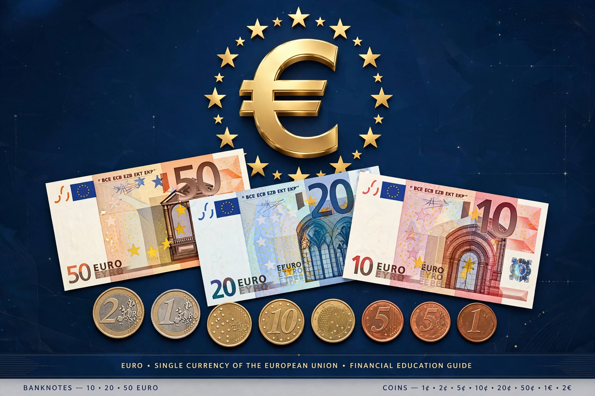

The euro (symbol: €; code: EUR) is the official currency of 20 of the 27 member states of the European Union, collectively the euro area or eurozone, and is used by over 340 million people. It is the second-largest reserve currency and second-most traded currency after the US dollar. One euro is divided into 100 cents.

| Euro | |
|---|---|
| Code | EUR |
| Symbol | € |
| Central bank | European Central Bank |
| Introduced | 1 January 1999 (electronic); 2002 (cash) |
The euro was established by the Maastricht Treaty (1992) as part of Economic and Monetary Union, building on the European Currency Unit. It launched for electronic transactions in 1999 with 11 members; coins and banknotes entered circulation on 1 January 2002, replacing currencies such as the Deutsche Mark, French franc and Italian lira. Croatia was the most recent adopter, in 2023.
Monetary policy is set by the European Central Bank in Frankfurt, working with national central banks in the Eurosystem. Coins have a common side and national sides; banknotes depict European architectural styles (the Europa series adds enhanced security features).
The euro is also official in Andorra, Monaco, San Marino, Vatican City, Montenegro and Kosovo by agreement or unilaterally. The eurozone debt crisis from 2009 exposed fiscal divergences, prompting bailouts and reforms such as the European Stability Mechanism and banking union.